Our story · 1929 to 2021
His life’s work
was people.
Robert C. Saffold Sr.
A teacher in the classroom. A coach on the field. An organizer on the course.
In Sebring, his service reached from E.O. Douglas High School to the Washington Heights Youth Center, from Florida Classic bus trips to the founding of a statewide golf association.
A life in dates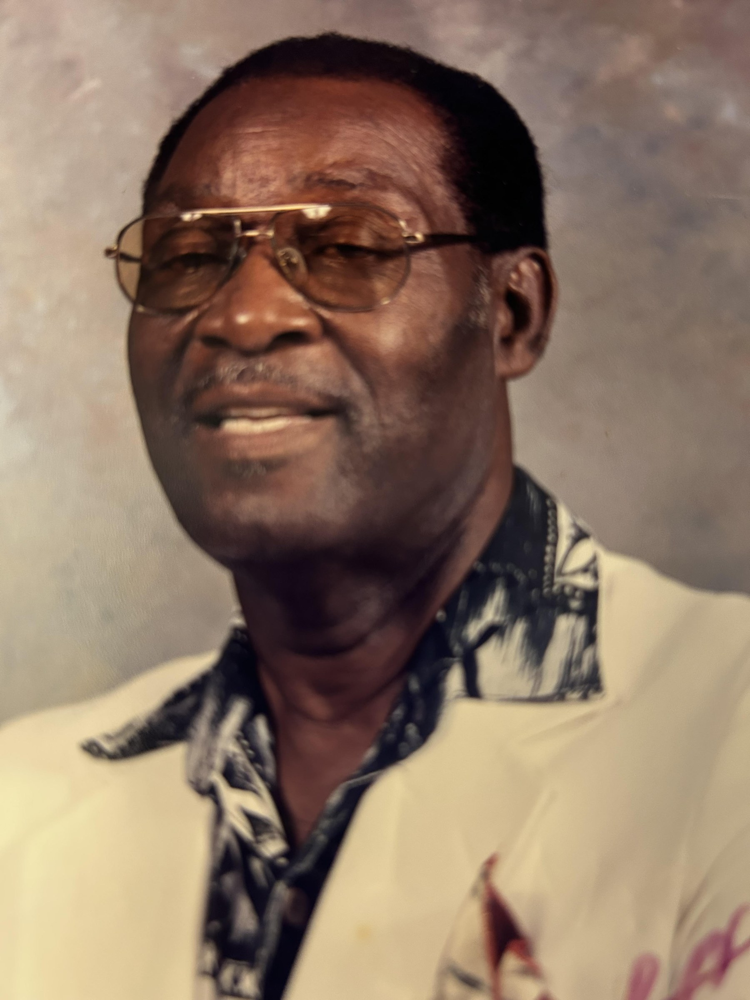
The teacher
Opportunity, beyond the classroom.
An Army veteran of the Korean War years, 1951 to 1953, and a Bethune-Cookman graduate, Robert Sr. began teaching art and coaching basketball and football at E.O. Douglas High School in 1957. His teaching and coaching career included Lake Placid High School and spanned twenty-six years.
He married Bernice Jackson. They raised two children, Robert Jr. and Susan, and he was grandfather to Janei, Brittany, Candace and Kelsey. He served as a deacon at Bountiful Blessings Church of God and as a Highlands County Rotarian.
He built the Washington Heights Youth Center and revived Juneteenth in Sebring. For about forty years, he organized trips to the Florida Classic, leasing as many as six buses in a year.
The organizer
A meeting in Sebring.
A movement across Florida.
Robert Sr. founded and led the Florida Sportsmen Association in Sebring. In 1972, he initiated the meeting at Harder Hall that created the Sunshine State Golfers Association. He later served as its president from 1979 to 1981.
His family remembers him as the first African American to host an annual golf tournament in Sebring. The tournament he started reached its forty-second year.
National Black Golf
Hall of Fame
African American Golfers
Hall of Fame
A life in dates
A legacy built
over generations.
- 1929
A life begins
Robert C. Saffold Sr. is born.
- 1951 to 1953
Service
Serves in the United States Army during the Korean War.
- 1957
Teaching in Sebring
Begins teaching art and coaching at E.O. Douglas High School.
- 1960
Coach
Leads the E.O. Douglas High School varsity basketball team.
- 1972
Bringing golfers together
Initiates the Harder Hall meeting that creates the Sunshine State Golfers Association.
- 1979 to 1981
Serving the association
President of the Sunshine State Golfers Association.
- 1996 & 2014
Honored by two Halls of Fame
National Black Golf Hall of Fame in 1996; African American Golfers Hall of Fame in 2014.
- 2004
Key to the City
On November 11, the City of Sebring presents him the key to the city and proclaims Robert C. Saffold Sr. Day.
- 2021
A community remembers
Robert Sr. dies on July 21, at age 91.
- 2022
The next chapter
The Robert C. Saffold Sr. Foundation, Inc. is formed in November.
From the family album
A snippet of a life
and a legacy.
Photographs shared by the Saffold family. Captions are in their words.
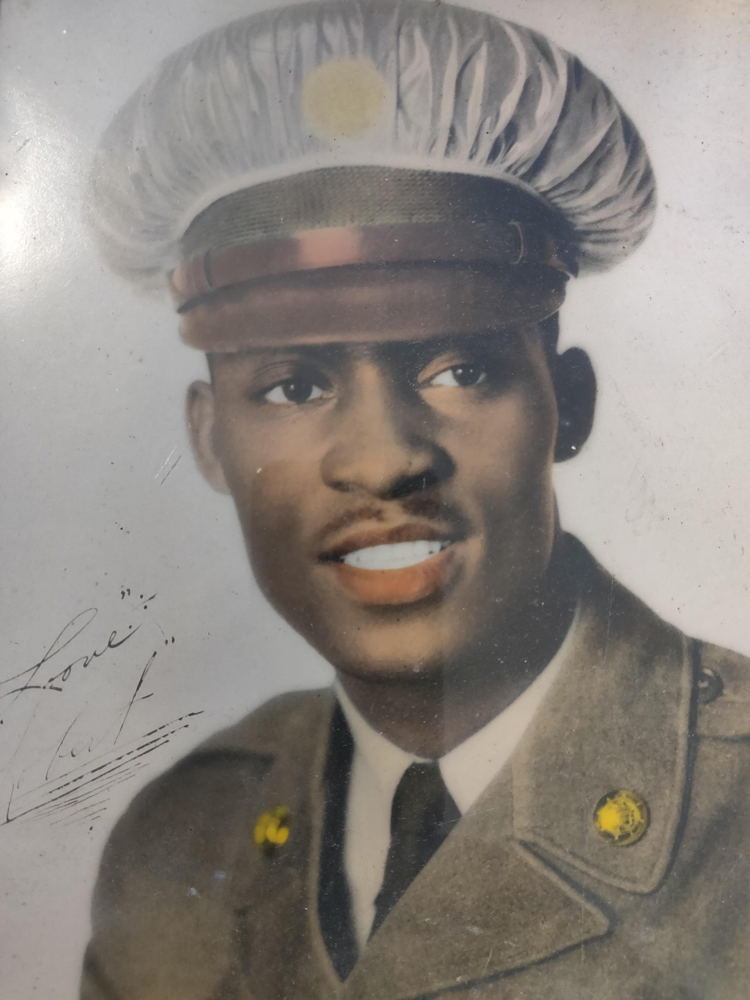
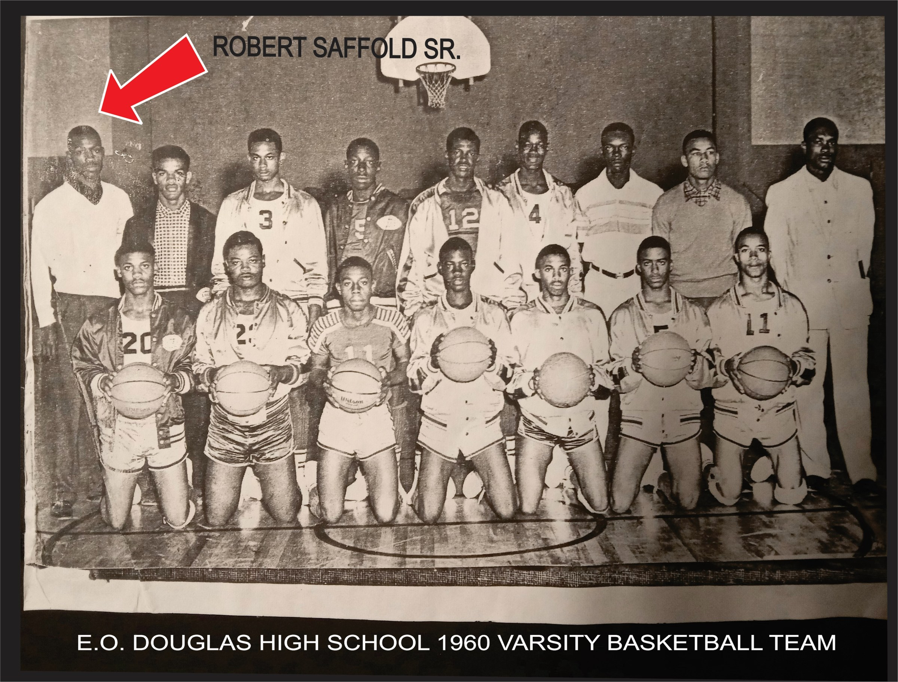
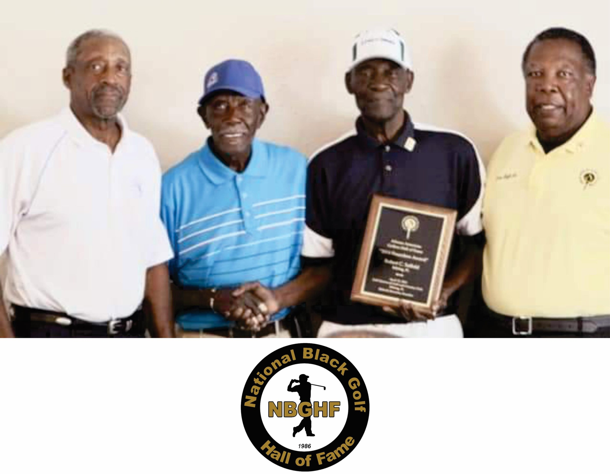
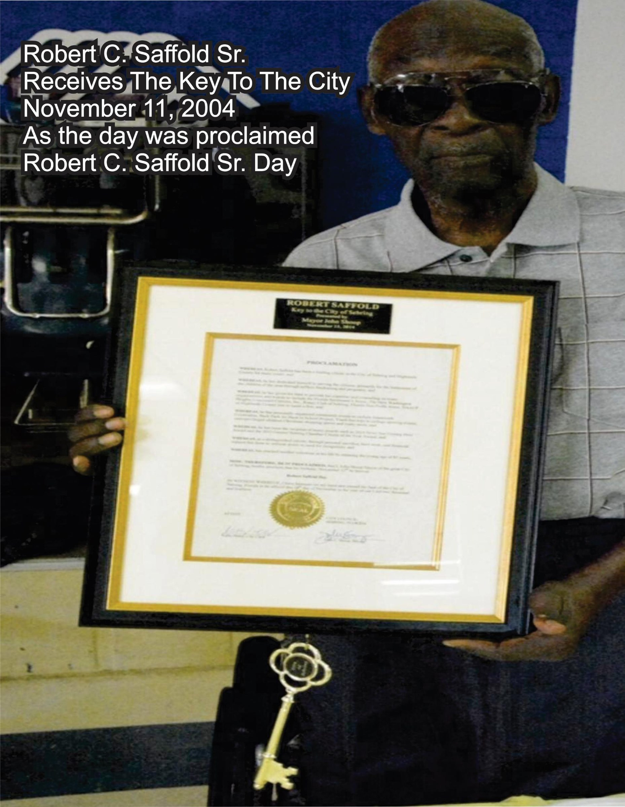
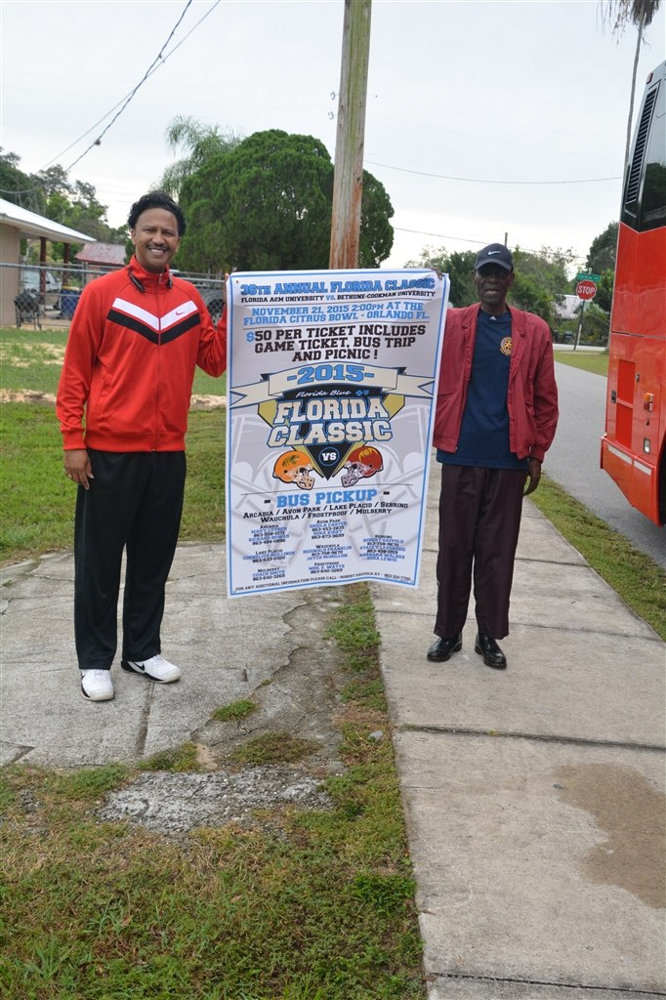
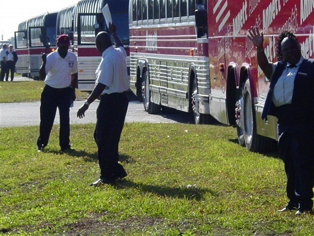
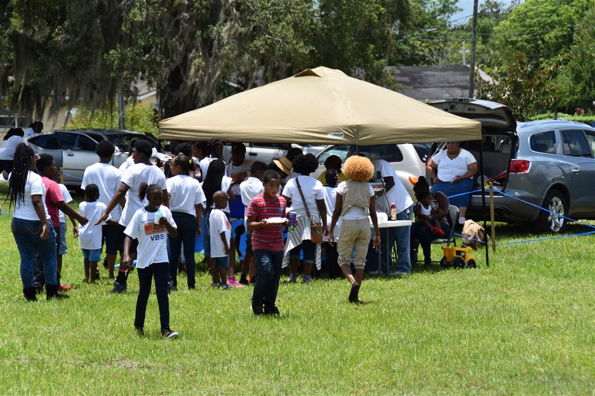
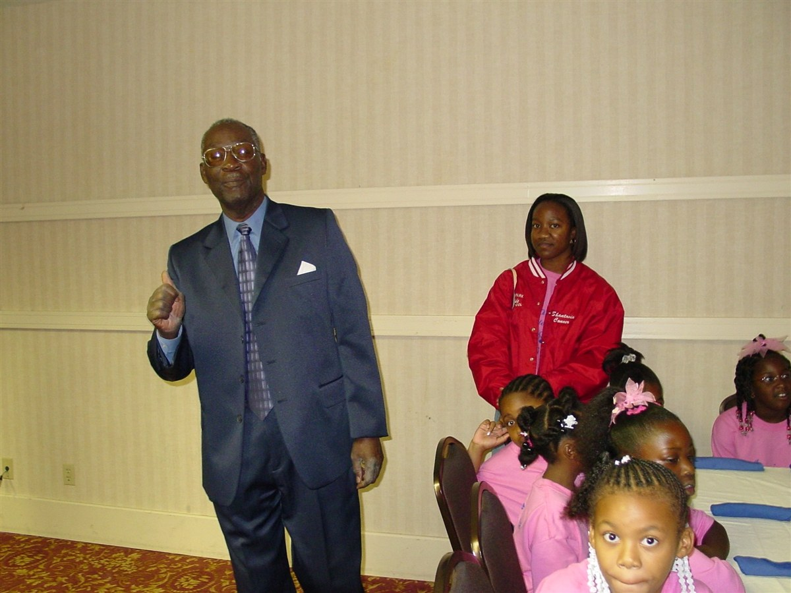
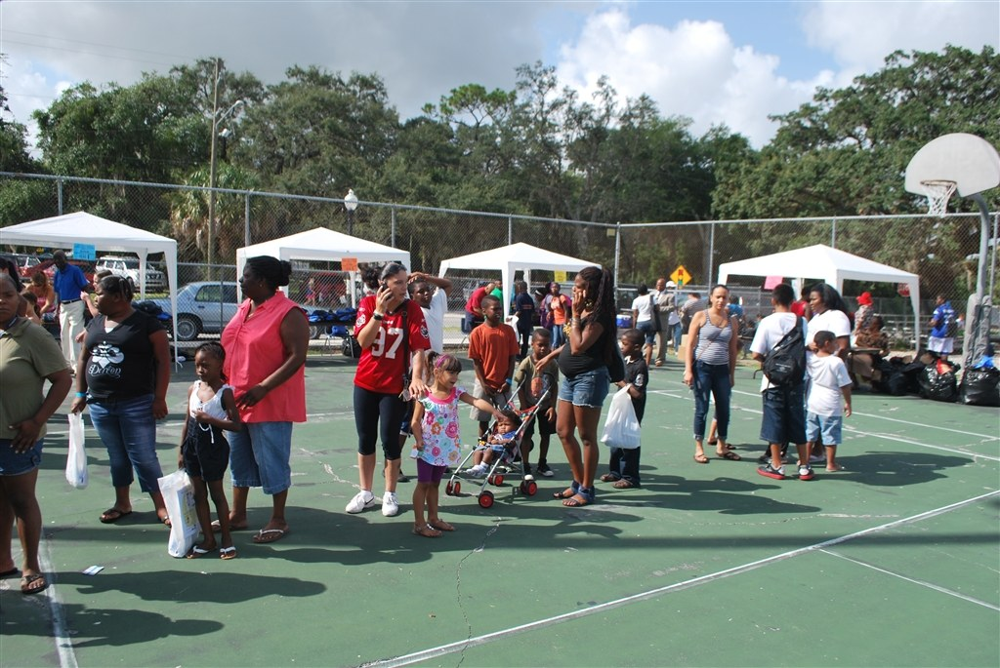
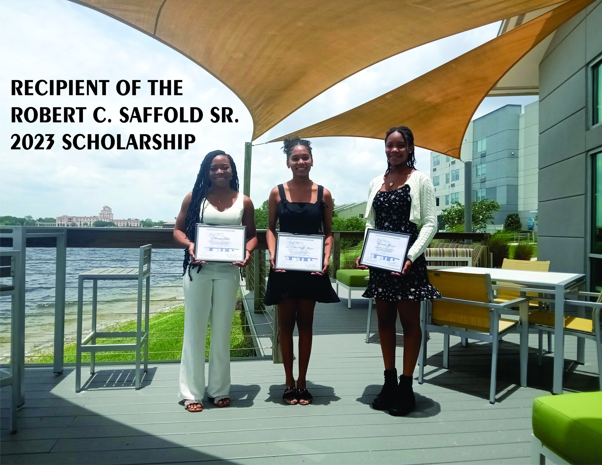
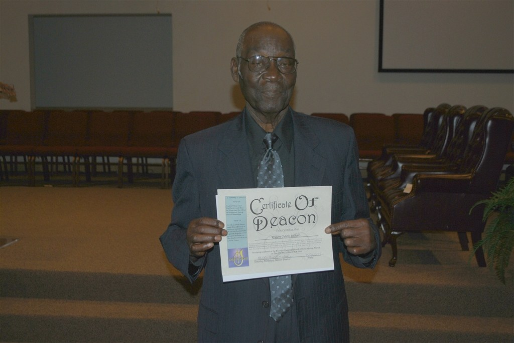
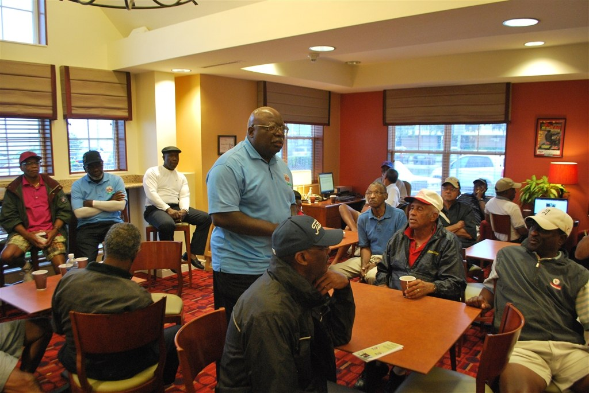
A son carries it forward
Robert Saffold Jr.
Founder and President.
One of the first four Black students to integrate Highlands County schools in 1966, Robert Jr. attended Woodlawn Elementary. After a career in Tampa, he returned following his father’s death in 2021.
He received the NAACP Robert Saffold Sr. Memorial Award in September 2024. The Foundation continues the family’s service to young people in Highlands County.
See the work today ↗Foundation officers
Robert Saffold Jr.President
Susan M. SaffoldTreasurer
Bobbie S. PowellSecretary